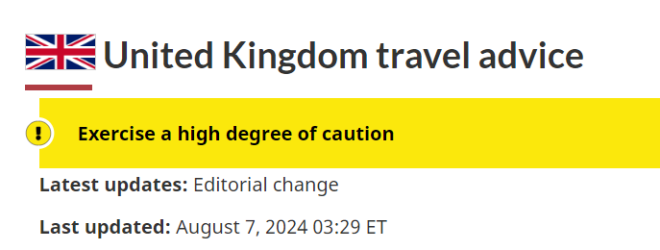
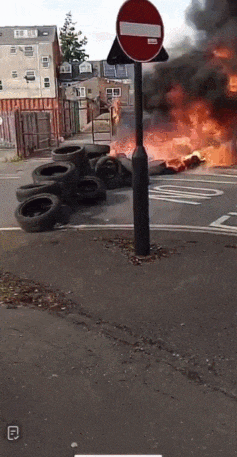
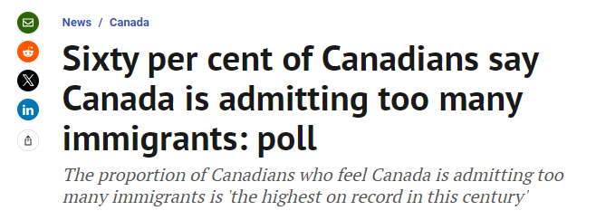

群情激愤！
前不久，加拿大刚刚发起了“反对移民政策”的大规模游行示威活动。
如今，多国“反移民”情绪似乎正在加剧。英国掀起暴乱，纵火、斗殴、警民乱斗，加拿大急发旅行警告，中国大使馆也发布安全提醒！
英国爆发十几年来最大暴乱，加拿大紧急发布旅行警告！
由于英国正在发生示威活动，以及抗议者与警方的暴力冲突，加拿大政府今日（8月7日）更新旅行警告，提醒人们在前往英国时要保持高度谨慎。

加拿大政府警告称：“示威活动时有发生，即使是和平示威也随时可能演变为暴力事件。”
“示威者与警方之间的暴力冲突导致了袭击、骚乱、抢劫和破坏。抗议活动可能迅速恶化，还可能导致交通中断。”
加拿大政府建议人们：
- 避开发生示威。抗议和大型集会的地区
- 谨慎行事
- 预计在发生示威活动的地区将增加警方的部署
- 遵守当地政府的指示
- 关注当地媒体，了解示威活动的进展和信息
这一切的起因是…….
7月29日，英国利物浦北部海滨小镇绍斯波特（Southport）发生持刀袭击事件，造成三名6岁至9岁的女孩死亡，另有8名儿童和2名成人受伤，这一惨案震惊全球。
事后，警方拘留了一名17岁的嫌疑人。社交媒体上迅速流传着言论，称该嫌疑人是一名寻求庇护者或穆斯林移民，但后来这些言论均被辟谣。
但即便如此，仍然激发了抗议者的“反移民”情绪。
英国的十几个城市都爆发了大规模的暴乱，难民酒店和汽车遭纵火焚烧，导致酒店内的人们被困并惊恐不已。
街边商户的玻璃被砸碎，室内遭纵火 ↓
人们闯进商店“打砸抢”。
财物被洗劫，图书馆、警察局等公共设施被砸，大批警察在和暴徒的冲突中受伤……
街道上一片狼藉……
英国政府表示，迄今为止，已经有数百人被捕，并调动了约6000名警察，警方正在为可能发生的更多骚乱做准备。
整个周五、周六和周日，暴力抗议者聚集在英国各地的城市和城镇中心，其中多人蓄意跟警方发生冲突并造成破坏。
这些集会表面上是反移民游行，但很快就演变成了混乱和暴力事件。
抗议者们焚烧了位于英格兰北部小镇罗瑟勒姆和英格兰中部中部地区塔姆沃思的两家假日酒店，这两家酒店收容了正在等待庇护申请的难民。

据当地政府称，暴徒投掷硬物、砸碎窗户并纵火，用灭火器对付警察、纵火焚烧酒店附近的物品，并砸碎玻璃进入大楼，导致不止一名警察受伤。
英国国家执法机构国家警察局长委员会 (NPCC) 表示，周末的暴力事件发生后，共有370多人被捕，预计这一数字还会上升。
中国驻英国大使馆发布安全提醒
7日，中国驻英国使领馆提醒在英中国公民包括中国游客密切关注当地治安状况，避免前往事件发生地点。近来，英国多地多次发生骚乱和社会治安事件。
中国驻英国使领馆再次提醒在英中国公民包括中国游客密切关注当地治安状况，避免前往事件发生地点。请及时注意使领馆连续发布的安全提示，切实加强安全防范。如遇紧急情况，须及时报警求助并与中国驻英国使领馆联系。
全球“反移民”情绪持续高涨，加拿大已达本世纪最高水平！
随着加拿大国内反对大量移民的情绪不断高涨，针对新移民的仇外情绪变得越来越明显。

根据Leger机构最近为加拿大研究协会进行的一项民意调查显示，60%的受访者认为移民“太多”，这一比例自2月份以来激增了10%。
2019年3月，这一数字仅有35%，而当时有49%人认为进入加拿大的移民数量合适。这一比例现在已经降至28%。
该协会称，加拿大反对移民的程度已经达到了本世纪以来的最高水平。
加拿大研究协会会长Jack Jedwab表示，住房危机和经济担忧正在推动人们对疫情后出现的移民数量的态度发生巨大转变。移民问题也正在成为美国和欧洲许多国家的首要议题。
在法国，Marine Le Pen领导的反移民党在该国提前选举中大幅增加了席位；6月份的民意调查发现，55%的美国人希望减少移民，高于2023年的41%。美国前总统特朗普承诺，如果再次当选，将实施大规模驱逐。
对于这件事，你怎么看？